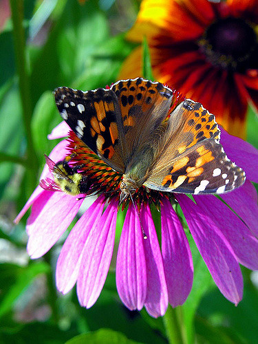

SVG te permite crear vectores para la web y está soportado por HTML y filter te permite crear filtros para
aplicarselos a los diseños svg pudiendole aplicarle diferentes estilos. Filter tambien es una propiedad css
que se le puede aplicar a las imagenes
Declaración svg
Para declarar svg en HTML se usa la etiqueta <svg> y ya dentro de ella se define la forma que
quieres que tenga le defines el tamaño que quieres que tenga.
Se dibuja un camino. Hay varias formas de hacerlo. Para dibujar el camino se usan
comandos, estos son:
M = moveto
L = lineto
H = horizontal lineto
V = vertical lineto
C = curveto
S = smooth curveto
Q = quadratic Bézier curve
T = smooth quadratic Bézier curveto
A = elliptical Arc
Z = closepath
Los filtros CSS son una poderosa herramienta que los autores pueden utilizar para lograr efectos visuales variables (como filtros Photoshop pero para el navegador). La propiedad filter de CSS proporciona acceso a efectos como desenfoque o cambio de color en el renderizado de un elemento antes de que éste se muestre, incluso algunas propiedades puede bajan el peso de la imagen. Los filtros se utilizan comúnmente para ajustar la representación de una imagen, un fondo o un borde.
Blur
Aplica un desenfoque Gaussiano a la imagen. El valor define el número de píxeles que se mezclan entre sí.
filter: blur(5px)

Brightness
Se aplica una multiplicación lineal a la imagen, haciendo que parezca más o menos brillante. Un valor de 100% o 1 no producirá ningun cambio, valores inferiores disminuirán el brillo y valores superiores aumentarán el brillo. Acepta como valor un porcentaje o número decimal.
filter: brightness(0.5)
Contrast
Ajusta el contraste del elemento. El valor por defecto sera 100% o 1. Acepta como valor un porcentaje o número decimal.
filter: contrast(200%)
Drop-shadow
Aplica un efecto de sombra a la imagen.
filter: drop-shadow(16px 16px 10px black)
Grayscale
Convierte la imagen a escala de grises. El valor por defecto es 0% o 0 y al incrementarse se aumentan los múltiplos lineales de este efecto. Acepta como valor un porcentaje o número decimal.
filter: grayscale(100%)
Hue-rotate
Aplica una rotación de tono (matiz) al elemento. Acepta como valor una medida de ángulo(deg)
filter: hue-rotate(90deg)
Invert
Invierte los colores de la imagen. El parámetro define la proporción de la conversión.
filter: invert(100%)
Opacity
Aplica transparencia a la imagen. El valor del parámetro define la proporción de la conversión. Un valor de 0% es completamente transparente. Acepta como valor un porcentaje o número decimal.
filter: opacity(50%)
Saturate
Aplica saturación a la imagen. El valor del parámetro define la proporción de la conversión.
filter: saturate(200%)
Sepia
Convierte la imagen a sepia. El valor por defecto es 0%. Valores entre 0% y 100% son múltiplos lineales del efecto.
filter: sepia(100%)
Combinación de filtros
Todos los filtros se pueden combinar, separando cada uno por espacio y teniendo en cuenta el orden al declararlos.